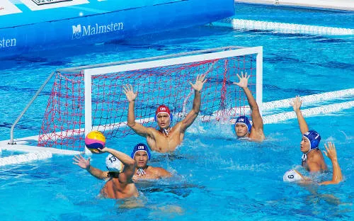
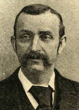
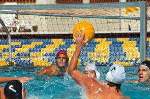
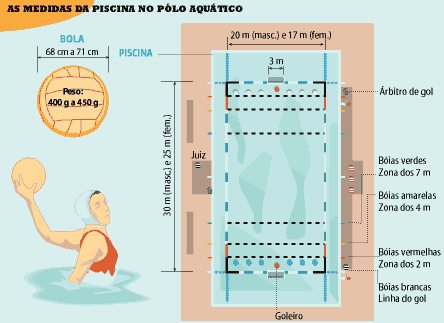
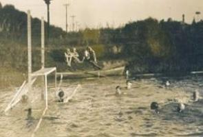

polo-aquatico
Polo Aquático:
O polo aquático é um esporte praticado entre duas equipes O objetivo principal deste esporte é fazer o maior número de gols para a sua equipe(Vieira, 2020);
Figura 1, Polo aquático sendo praticado.
Esse esporte é bastante semelhante ao handebol, a diferença entre eles é que o polo aquático é jogado na água e handebol é jogado na quadra(Vieira, 2020).
A História do Polo Aquático:
O Polo aquático foi originado no século 18, na Europa. No início o esporte era praticado em rios, e Lago. O Primeiro jogo oficial foi realizado em Londres, no Crystal Palace Pungem meados dos anos 1900 o polo aquático foi introduzido oficialmente nos jogos Olímpicos de Paris, sendo a primeira Modalidade coletiva da história do evento;(Vieira, 2020);
Figura 2, Foto do criador do Polo aquático.
No Brasil o Polo aquático foi introduzido por Flávio Vieira organizou um torneio na enseada de Botafogo, no Rio de Janeiro, 1913. O primeiro jogo Internacional só foi realizado em 1919, em águas livres da Baía de Guanabara quando o Brasil venceu A Argentina(Vieira, 2020).
Quantidade de jogadores:
O polo aquático é jogado em times com 13 jogadores cada, uma equipe do é formada por 6 Jogadores e 1 goleiro, e mais 6 jogadores no banco para substituições(Rondinelli, 2012);
Figura 3, Partida de Polo Aquático.
Um jogador é o capitão , que é Responsável pela ordem do time. É jogado em uma piscina toda profunda , que significa que os jogadores não podem tocar no fundo da piscina(Rondinelli, 2012).
Dimensões da Piscina:
A piscina para a realização do Polo Aquático devem possuir no mínimo dois metros de profundidade; A largura da piscina deve medir entre 10 e 20 metros, e o comprimento deve medir entre 20 e 30 metros.(Rondinelli, 2012).
figua 4, Dimensões da piscina do polo aquático.
Tamanho das Traves:
As traves no Polo Aquático devem medir mais ou menos TRÊS metros de largura,e 90 centímetros de Altura(Rondinelli, 2012).
Regras:
- A bola deve ser conduzida, manejada ou arremessada com as mãos(MARQUES, 2012);
- O goleiro pode segurar a bola com as duas mãos ou socá-la, e colocar os pés no chão(Vieira, 2020);
- Cada partida é constituída por quatro tempos de oito minutos cada, ou seja 32 minutos(Vieira, 2020);
- Quando há empates a disputa vai para os pênaltis com cinco pênaltis para cada equipe(Vieira, 2020);
- Faltas simples: segurar a bola com as duas mãos, mantê-la sob a água, dar impulso no fundo da piscina(Rondinelli, 2012);
- Empurrar o adversário(MARQUES, 2012);
- Faltas graves: nadar sobre as pernas de um adversário, puxar as pernas de um jogador(MARQUES, 2012);
- Equipe que está nadando, impedir a natação de alguém, jogar água no rosto de um adversário(MARQUES, 2012).
Impedir a cobrança de uma falta:
- Falta gravíssima: falta de respeito extremo com os árbitros,agressões e conduta antiesportiva(MARQUES, 2012);
- Cada equipe tem 30 segundos para realizar uma jogada, esse tempo reinicia cada vez que a equipe(MARQUES, 2012).
Retoma a posse da bola:
•O pênalti ocorre quando uma falta grave acontece em um ataque que provavelmente resultaria em um gol(MARQUES, 2012).
figura 5,Foto antiga de um jogo de polo aquático, no rio Tietê em São Paulo, em 1928.
Referências:
- Fonte 1:RONDINELLI, Paula. "Polo aquático"; Brasil Escola. Disponível em: https://brasilescola.uol.com.br/educacao-fisica/polo-aquatico.htm. Acesso em 17 de abril de 2023;
- Fonte 2:Vieira, Eduardo.”Polo aquático“;https://m.suapesquisa.com/educacaoesportes/polo_aquatico.htm.Acesso em 18 de abril de 2023;
- Fonte 3: Desconhecido,” Polo aquático”; http://historiainventos.blogspot.com/2013/10/waterpolo.html.Acesso em 25 de junho de 2023;
- Fonte 4: Folha de S.Paulo. “Polo aquático”;Folha Online (uol.com.br) . Acesso 25 de junho de 2023. fonte 5:MARQUES, João Paulo. Polo aquático (2012). Estudo. Disponível em: https://www.todoestudo.com.br/educacao-fisica/polo-aquatico. Acesso em: 25 de Junho de 2023.